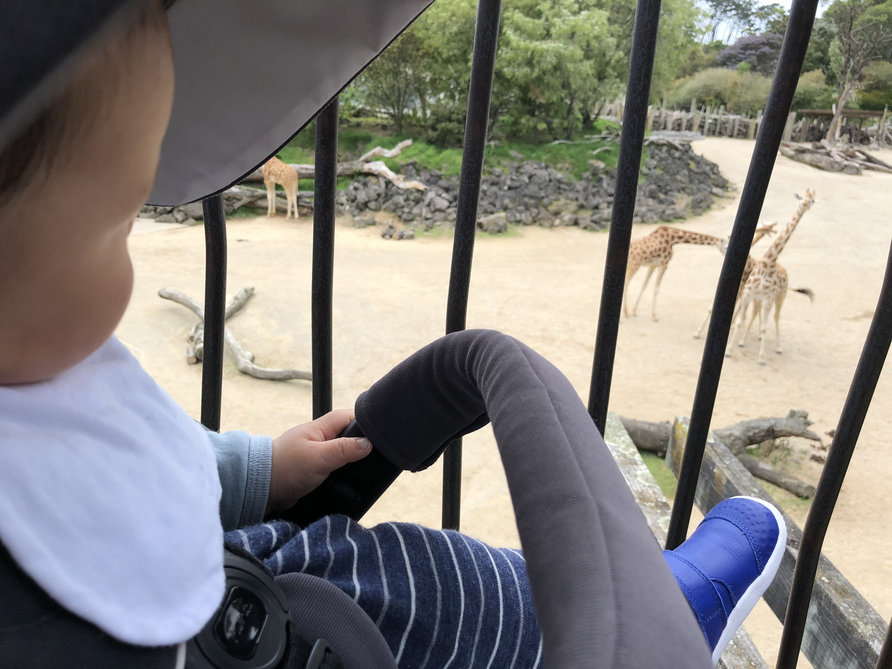

Ryker's visit
To Auckland Zoo
After I recovered fully from my fever and rash
Daddy took me to the zoo to visit my animal friends.
There were many kids there, similar age as me. I am sure they enjoyed as much as I did.
I was so excited to go to the zoo, it is the first time I am getting out the house since I recovered.
Daddy took me to the red panda first, I saw him eating on the tree, he was so adorable! Not as lovable as me of course!
Unfortunatly right after this, I made a poo and daddy had to clean it up for me before we continue our journey.

We then saw the Monkeys, the seal, penguin and Capybara.
Did you know that Capybara is the biggest Rodent on earth? That means they are related to squirrel and mouse, but in a size of a pig!

We then stopped for lunch, I had a big bowl of rice and a full bag of Mango rice pudding! So satisfying!
We went back to the track and checked out the giraffe and zebras. We also wanted to see the little rhino girl, unfortunately she was not out and we missed her.